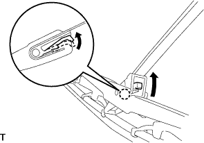
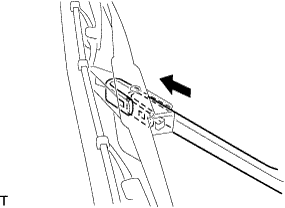
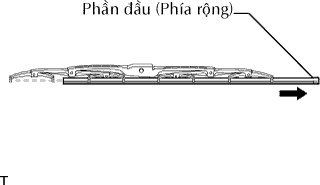

CAO SU GẠT NƯỚC PHÍA TRƯỚC > THÁO |
| 1. THÁO LƯỠI GẠT NƯỚC PHÍA TRƯỚC |
|  |
Nhả khóa cài như trong hình vẽ.
|  |
Tháo lưỡi gạt như trong hình vẽ.
| 2. THÁO CAO SU GẠT NƯỚC |
Tách phần đầu (phía to hơn) của cao su gạt nước ra khỏi lưỡi gạt nước.
|  |
Tháo cao su gạt nước theo hướng chỉ ra bởi mũi tên trong hình vẽ.
Tháo 2 lưỡi thép đỡ cao su gạt nước ra khỏi cao su gạt nước.